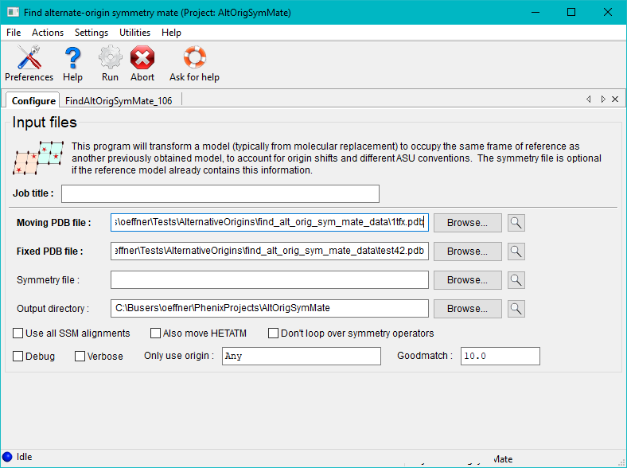
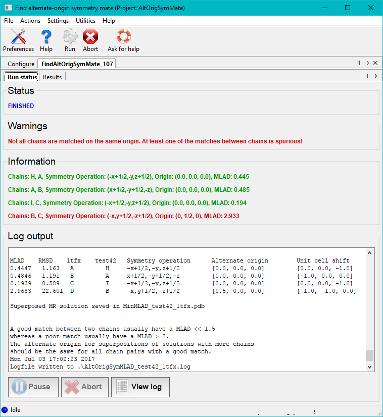
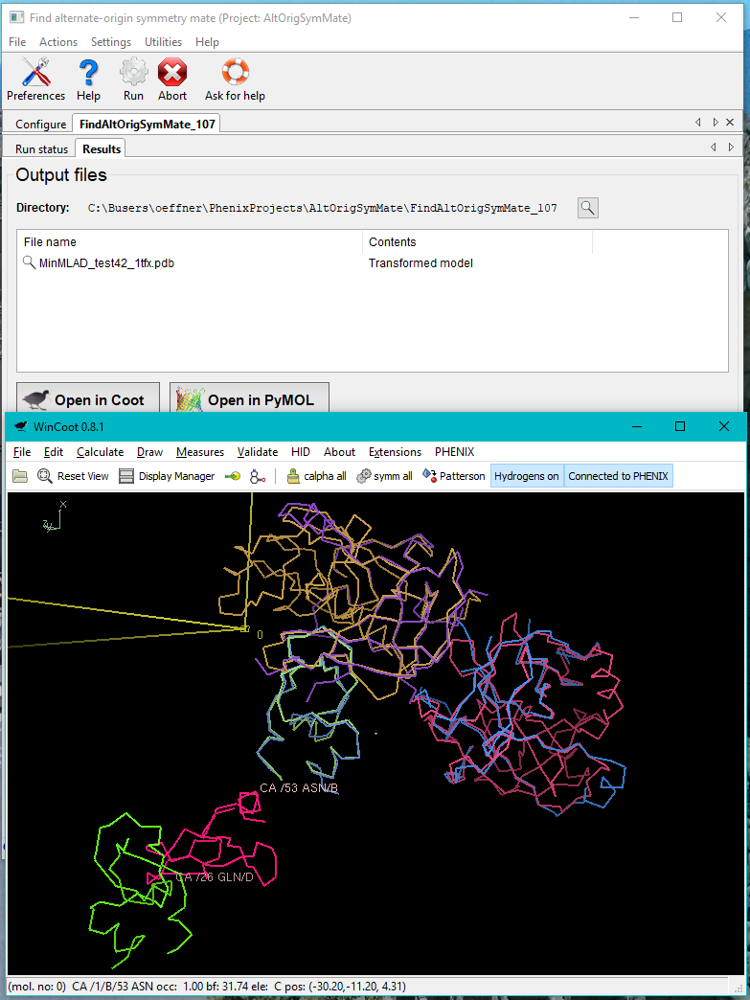

phenix.find_alt_orig_sym_mate (or phenix.famos) attempts to find the best superposition of two different molecular replacement solutions of the same dataset termed moving.pdb and fixed.pdb with respect to all symmetry operations and alternate origin shifts permitted by the spacegroup of the crystal. If either of the pdb files contain more chains each chain will be tested for their best match against chains in the other pdb file. It does so by calculating a score value, MLAD (see Algorithm), for all possible symmetry operations and alternate origin shifts of each chain in moving.pdb compared with chains in fixed.pdb. The transformation with the smallest MLAD is retained for that particular pair of chains.
phenix.find_alt_orig_sym_mate can be run from the GUI by clicking on the Find alternate-origin symmetry mates button under the Model tools category on the right hand side of the main Phenix window.

Once the run button has been pressed the program will execute for a minute or two depending on the size of the molecules and space group. Afterwards the run status page features a table of the best matches between pairs of chains in the two files. This includes the MLAD values, chain IDs, symmetry transformations and alternate origins for the two structures. If the same origin shift is not applied to all pairs of chains a warning will be printed. If the spacegroup of the crystal has a floating origin this generally results in an origin offset between chains that is not a rational number.

In the case illustrated above the chains A, B, C in the file 1tfx.pdb all have unique good matches with chains H, A, I in the file test42.pdb. This is stated in the log file as well as printed with green text on the GUI. One pair of chains does not make a good match. A warning is then printed with red text. The second column in the table in the end of the log file contains the RMSDs of the pairs of matched chains. From the results tab the superposed structure can be visually inspected in Coot or Pymol. Matches with low MLAD scores will have correspondingly good superpositions.

phenix.find_alt_orig_sym_mate can also be run from the command-line with PHIL input in either a text file or as keywords like:
phenix.famos moving.pdb=pdbfile1 fixed.pdb=pdbfile2
or:
phenix.find_alt_orig_sym_mate my_phil_input.txt.
The PHIL input scopes, moving and fixed, specifies the MR solutions. Both scopes are programmatically equivalent and must be non-empty. This means that a scope should either specify the parameter xyzfname or the sub-scope mrsolution or the sub-scope pickle.solution.
Examples:
Unless the input just constitutes of two PDB files a PHIL file is the easiest way to enter input. A few examples of PHIL for phenix.find_alt_orig_sym_mate are given below.
Testing a command-line Phaser MR solution file against a solution specified as a PDB file:
AltOrigSymMates.fixed.mrsolution
{
solfname = "testdata/MR_3ECI_A0_2P82_A0.sol"
ensembles
{
name = "MR_2P82_A0"
xyzfname = "testdata/sculpt_2P82_A0.pdb"
}
ensembles
{
name = "MR_3ECI_A0"
xyzfname = "testdata/sculpt_3ECI_A0.pdb"
}
}
AltOrigSymMates.moving.pdb="testdata/2z0d.pdb"
Testing two set of solution files from the PHENIX Phaser-MR GUI against one another:
AltOrigSymMates.fixed.pickle_solution
{
philfname = "testdata/phaser_mr_13.eff"
pklfname = "testdata/phaser_mr_13.pkl"
}
AltOrigSymMates.moving.pickle_solution
{
philfname = "testdata/phaser_mr_11.eff"
pklfname = "testdata/phaser_mr_11.pkl"
}
Testing two solution files from the command-line version of Phaser against one another:
AltOrigSymMates.fixed.mrsolution
{
solfname = "testdata/MR_3ECI_A0_2P82_A0.sol"
ensembles
{
name = "MR_2P82_A0"
xyzfname = "testdata/sculpt_2P82_A0.pdb"
}
ensembles
{
name = "MR_3ECI_A0"
xyzfname = "testdata/sculpt_3ECI_A0.pdb"
}
}
AltOrigSymMates.moving.mrsolution
{
solfname = "testdata/MR_2ZPN_A0_2P82_A0.sol"
ensembles
{
name = "MR_2P82_A0"
xyzfname = "testdata/sculpt_2P82_A0.pdb"
}
ensembles
{
name = "MR_2ZPN_A0"
xyzfname = "testdata/sculpt_2ZPN_A0.pdb"
}
}
AltOrigSymMates.spacegroupfname = "testdata/2Z0D.mtz"
For more information on the PHIL input see the bottom of this page.
The closest match between chains in the moving section to chains in the fixed section is saved with the name of the pdb file in the fixed scope, concatenated with the name of the pdb file in the moving scope but prepended with "MinMLAD_". A log file with the name of the pdb file in the fixed scope, concatenated with the name of the pdb file in the moving scope but prepended with "AltOrigSymMLAD_" is written containing standard output. All files are saved in the current working directory. If MR solutions specified in the PHIL contains multiple solutions then phenix.find_alt_orig_sym_mate will output mulitple log files corresponding to each MR solution.
A good match between two chains usually have a MLAD value below 1.5 whereas a bad match usually have a value above 2.0. The RMSD value for each match is also computed using the sequence alignment that the SSM superpose program uses. But without superposing the chains. If a match is good the RMSD will be small just like the MLAD value. It is advisable to visually inspect that the chains of structures have been transformed to the same origins in a molecular graphics viewing program.
phenix.find_alt_orig_sym_mate computes configurations by looping over all symmetry operations and alternative origin shifts. An alignment between C-alpha atoms from moving.pdb and fixed.pdb is computed using secondary structure matching (SSM). If that fails or if the MLAD score achieved with SSM is larger than 2.0 an alignment is computed using MMTBX alignment functions which is part of the CCTBX. To estimate the best match a distance measure between the aligned C-alpha atoms is computed for each configuration. The mean log absolute deviation (MLAD) is defined as:
MLAD(dR) = Σ( log(dr·dr/(|dr| + 0.9) + max(0.9, min(dr·dr,1))) - log(0.9)),
where dr is the difference vector between a pair of aligned C-alpha atoms and the sum is taken over all atom pairs in the alignment. The factor log(0.9) is subtracted to ensure that MLAD(0) = 0.0, i.e. that two identical structures produces the value zero.
MLAD can loosely be interpreted as a distance measure between structures. But it is not a metric in a strict mathematical sense since the triangle inequality is not fulfilled. Unlike a plain root mean square deviation the logarithm in the MLAD formula will downplay contributions of atom pairs where the atoms are spatially distant. If an RMSD were employed such atom pairs would contribute on an equal footing with those groups of atom pairs that can be superposed perfectly. This in turn may lead to non-optimal superpositions when the structures tested against one another consists of multiple domains where one domain has undergone a domain motion, i.e. where a subset of atoms in one chain are bound to be spatially distant from the atoms in the other chain they have been paired with.
phenix.find_alt_orig_sym_mate.py will for each chain in the fixed scope find the smallest MLAD with a copy of each chain in the moving scope for a given symmetry operation and alternative origin. When all chains in the fixed scope have been tested these copies will be saved to a file. For spacegroups with floating origin the minimum MLAD is found by doing a Golden Sectioning minimization along the polar axis for each copy of chains in moving.pdb.
Invoking this flag will move hetero atoms (ligands, waters, metals, etc.) in conjunction with their associated peptide chain. The program first invokes phenix.sort_hetatms as to associate hetero atoms sensibly with adjacent peptide chains.
After having identified the transformation for a chain yielding the smallest MLAD score it then subjects the associated hetero atoms to the same transformation.
Invoking the debug flag produces individual pdb files of the C-alpha atoms used for each SSM alignment of the moving scope for each permitted symmetry operation and alternative origin. A gold atom is placed at the centroid of the C-alpha atoms. Similar files are produced for the fixed scope. These files are stored in a subfolder named "AltOrigSymMatesFiles".
If a floating origin is present in the space group a table of MLAD values is produced by sliding a copy of the chains in the moving scope along the polar axis in the fractional interval [-0.5, 0.5] for each permitted symmetry operation and alternative origin.
The program tests all solutions present in solution files entered as fixed scope against all solutions present in solution files entered as moving scope. Consequently the execution time is proportional to the number of solutions in fixed scope times the number of solutions in moving scope.
The execution time is proportional to the number of SSM alignments being tested; if SSM identifies 12 alignments the program will take 12 times as long.
The command-line syntax mentioned in the Computational Crystallography Newsletter 2012 January has been replaced by PHIL syntax.
Algorithms for deriving crystallographic space-group information R.W. Große-Kunstleve Acta Cryst. A55, 383-395 (1999)
phenix.find_alt_orig_sym_mate Robert D. Oeffner, Gábor Bunkóczi and Randy J. Read Computational Crystallography Newsletter 2012 January, 5-10 (2012)
Secondary-structure matching (SSM), a new tool for fast protein structure alignment in three dimensions. E. Krissinel and K. Henrick Acta Cryst. D60, 2256-2268 (2004)